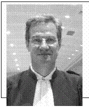

Bulletin N° 27
Juillet 2009
SUPPLEMENT BULLETIN N° 27
�

PLAIDOIRIE DE MAITRE FORGET
"Monsieur le président, à sa place, au milieu des victimes, l'association qui regroupe nombre d'anciens salariés prend la parole. Ce ne sont pas, comme je l'ai entendu, les principaux, les principales victimes. Y a-t-il eu des victimes principales, et secondaires ? Ce sont des victimes, et ce mot résume tout ce que l'on doit entendre de respect pour ces personnes. Victimes, elles ont souffert. Elles ont eu de la peine. Elles ont pleuré. Elles se sont trouvées en colère. Et je viens ici exprimer une parole de victimes. Tout simplement. On dira, on a dit, et c'est regrettable, une voix discordante, dissonante, non. Une voix différente. Une autre voix qu'il faut entendre si l'on accepte d'entendre toutes les victimes dans toutes leurs interrogations. Une parole inhabituelle, peut-être. Une parole qui s'est imposée parce que nécessaire, indispensable dans ce procès, même si elle peut parfois avoir été difficile à entendre. La parole de ces ouvriers, de cette communauté industrielle issue du début du XXe siècle. Leur vie se confond parfois avec le travail. La parole de ces ouvriers dans un monde dur, qui au 21 septembre sont terrassés dans leur vie, leur monde, cet indescriptible chaos, qui vont aider, s'entraider, porter secours, mettre en sécurité l'usine, c'est peut-être nous sauver. Leurs paroles, ce n'est pas qu'une parole. Je leur ai dit : vous êtes 600 et ce sont 600 paroles. Ces gens ont évolué, je dois vous en apporter la preuve, ils évoluent pourvu que l'on souhaite les accompagner.
Au lendemain du 21 septembre, ces ouvriers sont stigmatisés, montrés du doigt par une communication insupportable. Une communication précipitée, prématurée, excessive, partiale, absurde.
Le 22 septembre on parle de l'auto inflammation du nitrate dans le journal.
Le 24 septembre, on leur dit c'est un accident à 90%.
Le 25, on leur parle d'usine poubelle, de dépotoir chimique...
Le 27, on leur parle d'un rat mort.
Absurde pour ces gens qui savent ce qu'était leur usine, comment ils faisaient leur travail. Alors ils se sentent montrés du doigt, insultés par des mots sur lesquels vont se construire les pancartes dans la rue. Ce sont les mots de l'expert, et de l'autorité judiciaire. Ce ne sont pas n'importe quels mots. L'explosion a tué, blessé. Ces mots qui stigmatisent, figent les regards, les fossés se construisent, les camps s'organisent. Comment demander à ces personnes, insultées, humiliées, provoquées de suivre le processus judiciaire qui s'engage? Puisque vous pouvez dire des choses fausses sur nous, nos produits, vous pouvez aussi vous tromper. Voilà leur réaction. Ne peut-on pas les comprendre? Ou alors il faudra leur dire pourquoi on s'est exprimé avec tant de légèreté.
Rien de cela.
Ils attendent toujours de savoir pourquoi on a pu aussi rapidement parler d'accident. Tout le monde l'a entendu. Oui, on pouvait peut-être parler d'accident parce qu'on craignait des troubles... Le politique ne viendra pas le dire. Le préfet non plus. On pouvait l'entendre. Mais les mots ne viennent pas. Ils seront confortés dans leur difficulté à suivre, dans leur réticence, par l'incapacité des autorités à reconnaître l'erreur. Mais c'est possible de reconnaître l'erreur.
Il y a eu ici une curieuse confrontation entre le colonel Donin et M. Thomas. Je ne sais ce que vous en avez perçu. M. Thomas, il voulait simplement entendre pourquoi un colonel lui donne une liste et la lui reprend, pourquoi à un match de foot, il lui dit "qu'on ne saura jamais la vérité". Ne peut-on pas reconnaître qu'on a eu une parole malheureuse, même si l'on est une autorité ?
Ensuite, les experts n'auraient-ils pas dû reconnaître qu'ils se sont trompés? Il y a eu des erreurs, des impasses. J'aurais toujours en tête l'opération de séduction où l'on convoque l'ensemble des victimes pour leur dire : voilà, c'est fait, cela explose. Ce sont les expériences de M. Barat. Il s'est trompé, il a confondu le nitrate avec l'urée. Et on mettra six mois pour entendre reconnaître que l'on s'est trompé. Pourquoi les experts ne disent pas : on s'est trompé. La difficulté des experts, les 9 et 11 octobre 2002, à admettre que l'on ne peut pelleter du DCCNa comme cela. Mais ce jour là, on invalide les choses! Mais on met combien de temps pour le faire ? Le 30 janvier 2003, les experts disent que les opérations n'invalident pas cela. Il faut assumer. Dire que l'on peut se tromper.
Tout cela sédimentarise l'incapacité des gens à comprendre. Voilà ce qui fait qu'il faut accompagner ces gens dans le chemin judiciaire et que nous nous honorons à le faire. Il n'y aura aucune réaction de l'institution judiciaire ? Va-t-on changer les experts ? Non. Alors, c'est sur ces paroles que se construisent des incompréhensions, des colères et parfois des murs. J'écoutais aux infos de 20 heures M.Arslanian, directeur du BEA, que nous avons entendu ici, qui se préoccupe de la catastrophe du vol d'Air France, qui disait : "il y a plusieurs hypothèses. Je ne peux pas les exprimer, car si je les exprimais, je pourrai m'influencer". Voici une démarche rigoureuse, judiciaire.
Alors voilà pourquoi ces personnes vont se constituer en association, non pas en 2001, mais en 2004. Parce que l'on ne peut admettre la vérité proclamée. Voilà pourquoi ces personnes se rassemblent, pour comprendre ce qui s'est passé, pour connaître la vérité établie, scientifiquement, par la justice. Ils savent que l'on doit travailler sur l'hypothèse accidentelle. D'abord, ils ont pensé à la tour de prilling, cela a été invalidé. Ils savent qu'il y a des possibilités avérées, mais elles demeurent des possibilités et qu'il faut des certitudes pour construire une culpabilité, une vérité. Il est difficile d'admettre la vérité parce qu'elle a été simplement proclamée. Ce mot me revient souvent. De Condorcet :
"La vérité est à ceux qui la cherchent, et non point à ceux qui l'établissent".
Alors, ils vont se regrouper, suscitant parfois l'anathème de l'instrumentalisation. "Vous avez été payés"... Alors, ils vont recueillir des témoignages. Pourquoi l'institution judiciaire ne l'a-t-elle pas fait? Ils font formuler des demandes d'acte... oubliées ou rejetées. Il y a ce moment, la fin de l'instruction, article 175 qui tombe le jour anniversaire. On reprend tout ce que l'on a fait pendant la procédure, et cette audience ou je viens porter 30 demandes d'acte, rien de mes 30 demandes ne mérite crédit... J'aurais dû vous le dire. Alors voilà comment ces personnes se trouvent dans la procédure. On donne l'impression que ces victimes qui veulent être acteurs n'ont pas la parole. Merci monsieur le président, mesdames, messieurs d'avoir permis ce procès. Vous avez fait ce que la justice offrait de mieux. En cela, ce procès est exemplaire.
Oui, toutes les pistes ont été reprises, explorées. Ont-elles été toutes fermées? Ce sera encore la question. Vous y répondrez. On ne pourra pas dire que l'on n'a pas mis dans le prétoire toutes les hypothèses.
Oui, nous avons avancé.
Oui, je crois qu'il fallait tout reprendre, même si j'ai parfois parlé de colloque.
Oui, nous avons appris beaucoup de choses. Ce procès a revêtu une valeur humaine incontestable.
De la part des acteurs. Nous nous sommes entendus et respectés. Nous avons vu des personnes venir, deviser, passionner, avec leur colère légitime et différente, ces personnes se sont côtoyées, se sont parfois assises les unes à côté des autres, se sont respectées, considérées.
Oui, là-bas au fond, il y a eu des mots et des paroles qui se sont échangées. Il fallait ce temps.
Et l'humanité dans le procès, c'est quand même l'indispensable. Il y avait la nécessité de respecter les colères, les souffrances et les libertés de chacun. Et nous avons appris, on peut faire un petit bilan, nous avons vécu un procès pénal qui parfois tenait du procès civil, sociétal, avec des places prises, différentes pour les victimes... Avant, les victimes, on les oubliait facilement dans l'institution judiciaire. Puis il y a eu des lois sur l'indemnisation. Ensuite, les victimes sont venues au procès pénal, elles ont été invitées, pour ne pas être oubliées. Mais on ne peut leur dire venez, mais taisez-vous... Venez, mais asseyez-vous derrière le ministère public. Les victimes ne peuvent demeurer silencieuses, et que leur parole soit celle d'autres. Ce ne fut pas le cas. J'ai même entendu des parties civiles prendre le rôle du parquet par anticipation... Alors les salariés ne défendent pas l'organisation de l'entreprise, par contre, leur usine, ce n'était pas l'usine poubelle! L'usine modèle, je ne sais pas. Ce procès leur a rendu leur dignité. Ils défendaient l'obligation de savoir avec certitude. Et on est en difficulté, parce qu'on n'est pas chimiste. Monsieur le président, votre connaissance du dossier a été parfaite. Mais c'est toute la difficulté du procès pénal qui ne peut accéder qu'à une vérité certaine. On ne peut condamner sans savoir. (...)
Au bout du compte, j'ai été sidéré par l'assurance des uns à démontrer tout, qui n'avait d'égal que l'assurance des autres à démonter tout. Je ne les ai trouvés convaincants ni les uns ni les autres. A l'issue de tout cela, pouvez-vous juger? Est-on allé au bout du chemin pour comprendre avec certitude ? La proposition des experts, la clé de voûte, le tir 24, ce n'est pas moi qui l'ai dit. C'est ce qui fonde la décision. Déjà, mesurons, quand même le chemin qu'il faut parcourir pour arriver au tir 24. La difficulté pédagogique de cette instruction. Pendant un an, les experts se trompent, et pendant des années, ils refusent de l'admettre. De 500 kg de DCCNa à quelques balayures, on y passe n'importe comment. Il faut qu'il y en ait eu du DCCNa... Il fallait le trouver... Ces expertises reposent sur celles de M.Barat qui est venu nous dire qu'il avait pataugé. Et ensuite, du DCCNa dans la benne blanche partie du 335. Je ne sais pas s'il y a une possibilité avérée qu'il y ait eu du DCCNa, ce que je sais c'est que lorsqu'on le cherche, il n'y en a pas! Il va falloir admettre quelques pelletées. Il a fallu déverser ce DCCNa dans le tir 24, pas dans la réalité. Mais pardonnez-moi... Rien avant, rien après. 382 prélèvements effectués par Mme Rey et M. Deharo : rien. Rien avant, rien après, suffisamment pendant ? On travaille sur rien... S'il y a accident, c'est à cause de la formation de NCl3. On sait, dans des éprouvettes, oui, des aquariums... On sait que le NCl3 peut se créer dans des éprouvettes. J'ai repris hier soir la page541 du rapport d'expertise.
On inverse les propositions, par rapport à la teneur en eau : l'avis des experts devient la démonstration. Ce n'est pas une cause certaine démontrée.
Pendant cette audience, nous avons aussi pris des hypothèses. Nous sommes restés dans l'hypothèse perpétuelle. Les juges ne se transforment pas en chimistes, mais peuvent demander aux chimistes de poursuivre un travail qui a été arrêté par le temps. M. Bergues nous dit : "je n'avais pas le temps, pas les bons produits". On aurait pu imaginer que soient reconstituées les choses selon un protocole scientifique. Me Vacarie vous a dit combien c'était difficile.
Mais les experts concluent leur rapport :
"C'est un cas unique, sans précédent, non répertorié". Quand on travaille sur l'inédit, on doit être certain. Alors pourquoi pas un supplément d'information ? Parce que le temps...
Parce que les contingences matérielles. ..Mais si on veut poursuivre et aller jusqu'au bout, oui, j'aimerais qu'on me dise si il y a une possibilité que la benne ait pu se déverser mécaniquement comme ça, j'aimerais qu'on puisse me dire quelle était la situation du box au matin du 21 septembre. Pas avec les archaïsmes des 14 secondes que l'on attend pour déverser le NAI. Je n'ai jamais compris les 14 secondes. Je savais qu'on avait d'autres moyens. Cela permettrait de résoudre toutes les contradictions, les insuffisances du tir 24, de le répéter parce que ce serait nécessaire à la rigueur scientifique. D'autant plus que la thèse se construit sur ce tir 24. J'ai conscience du caractère particulier de la demande. Dans ce même supplément, pourquoi ne pas regarder les zones d'ombre ?
Elles ont sérieusement diminué. Grâce à l'audience. On entend, on comprend, on évolue. J'ai encore, cela fera sourire, cela sera caricaturé.. Il y a quatre choses qui m'ont un peu perturbé. Une chose, pardon de le dire,parce que celle-là, on va la caricaturer. C'est une demande à laquelle l'association n'avait jamais pensé. Sur la piste volontaire. Mais pendant ce procès, un témoin, M. Ben Driss a dit qu'au matin du 21 septembre, qu'une personne était là, et que l'on ne savait pas qui c'était.
Supplément d'information. Je ne réveille pas les démons. Mais il serait légitime de vérifier.
Ensuite, il s'agit de demandes d'actes rejetées pendant l'instruction. L'hélicoptère. Dans ma compréhension de l'audience, l'hélicoptère enregistré par France 3 à Bellefontaine n'était pas celui de l'armée ni celui de la gendarmerie. J'ai compris qu'il s'agissait d'un Puma, donc c'est l'armée. Sur les sons. J'ai compris. Le son sismique, l'onde de choc. Mais j'ai entendu M. Lacoume ne pas contredire M. Grenier. Que les caractéristiques du premier son n'étaient pas le spectre du second
Enfin, les éléments précurseurs. Les témoignages. Il y a des choses qui me paraissent exceptionnelles, des décalages dans le temps. Ce n'est pas parce que l'on ne comprend pas que cela ne s'est pas produit. Je pense que dans le cadre de ce supplément d'information, on pourrait rassembler des compétences qui sont venues se caser pour fermer ce qui n'a pas totalement été fermé. L'association n'a pas accepté que soit privilégiée aucune piste, aucune demande d'acte n'a porté sur la thèse du complot. Les salariés ont même pensé à un accident interne. Ils ont compris M. Couderc qui a écarté cette thèse.
Vous allez juger. C'est votre rôle. Vous allez condamner, relaxer. Condamner et ce sera l'objectif de l'accusation et de certaines parties civiles. Vous avez relaxé. La condamnation et la relaxe ne sont pas l'objectif de l'associaion. Elle vous propose une décision difficile si le tribunal veut aller au bout du chemin de la vérité. Je pourrais m'arrêter là, mais je prends le risque. Cette association, dans sa liberté de penser, s'est placée dans le processus pénal. Ils ont imposé certains débats, ils proposent une perspective. Votre décision, ils la respecteront. J'ai porté cette voix difficile, avec eux, pour qu'ils soient respectés. Ils devaient être accompagnés dans ce chemin, et ils seront accompagnés dans votre décision. Je demande, dans l'hypothèse de la condamnation, un euro de dommages et intérêts, et l'article 475".
__________________________________
Page 1 : Le Mot du Président Page 2 : Mémorial - Décès
Page 3 : Compte rendu sortie 06/06/2009
Page 4 :Inscription sortie Cro-Magnon
Page 5 :Mé Lo Di, Journée pétanque
Page 6 :Activités Page 7 :Activités
Page 8 :Commémoration, renseignements
Page 9 :Plaidoirie Maître Forget
_________________________
RAPPEL : permanences tous les mardis de 10 à12h
Téléphone / répondeur : 05 62 11 45 50
Adresse é-mail : azf-ms@wanadoo.fr
Adresse postale : AZF 143 route d'Espagne
31100 Toulouse
|
|